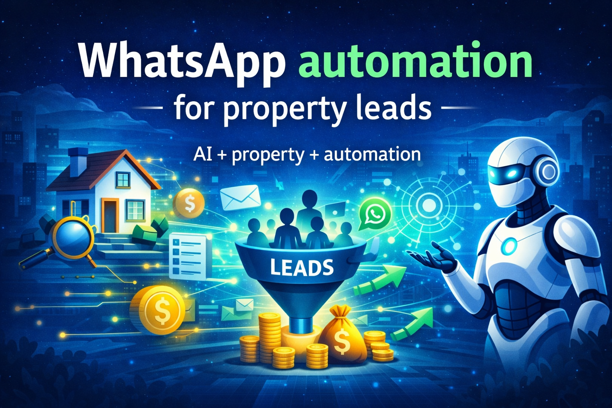

The complete guide to capturing, nurturing and converting real estate leads faster.

In today’s digital real estate market, buyers expect instant responses. If your response is delayed, the lead is already lost.
This is where WhatsApp automation helps real estate teams engage every lead instantly and improve conversions.
WhatsApp is the most preferred communication channel for property buyers. It is fast, convenient and always accessible.
Instant communication increases the chances of converting leads into actual buyers.
Most real estate teams rely on manual processes like calls and spreadsheets. This leads to delayed responses and lost opportunities.
👉 Read more: Why Real Estate Teams Lose Leads
WhatsApp automation allows businesses to automatically send messages, follow-ups and property details to leads without manual effort.
1. Lead Capture: Leads come from ads, forms or landing pages.
2. Instant Message: Automated WhatsApp reply is sent immediately.
3. Qualification: Leads are filtered based on budget and interest.
4. Follow-Ups: Automated reminders keep leads engaged.
5. Sales Transfer: Hot leads go to agents for closing.
👉 Also read: AI in Real Estate Sales
Without automation: Lead responds late → lead lost With automation: Instant reply → engagement → conversion
AI-powered WhatsApp systems will soon handle complete sales pipelines including qualification, nurturing and closing support.
SalesSetu automates lead capture, qualification and WhatsApp follow-ups for real estate businesses.
It ensures no lead is missed and every prospect is engaged properly.
Capture, qualify and convert leads automatically with SalesSetu.
Explore SalesSetu